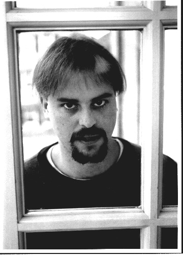

http://www.concentric.net/~mingalls/
mingalls@concentric.net
Born in 1970, Matt Ingalls is a "slackless Gen-X abberant" [SF Weekly] currently
creating music in the San Francisco Bay Area. His compositions have been
performed in the United States and Europe, receiving many awards and recognitions
including 1st Finalist in the 1994 Bourges Electro-acoustic Puy-Humor Competition
and the 1996 ASCAP/SEAMUS Commission and Recording Prize. As a clarinetist, matt
is active in new and improvised music, and can be heard on Apraxia, SEAMUS, Super
J, and TMEA labels. matt also designs computer music software, including an
interactive, real-time, virtual improviser written in HMSL. Most currently, he
has been active with two others in developing the Csound interface for Power
Macintoshes.